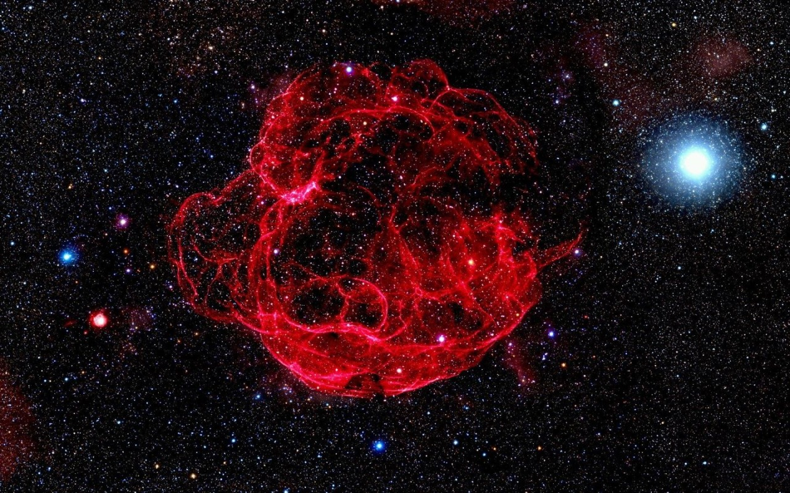

Supernova
Sure, there are dead stars. But at least before they died, they were stars.
And their death was a supernova - their death demanded attention
Sure, there are dead stars. But at least before they died, they were stars.
And their death was a supernova - their death demanded attention
A supernova is a powerful and luminous stellar explosion. This transient astronomical event occurs during the last evolutionary stages of a massive star or when a white dwarf is triggered into runaway nuclear fusion.

Supernovae are often seen in other galaxies. But supernovae are difficult to see in our own Milky Way galaxy because dust blocks our view. In 1604, Johannes Kepler discovered the last observed supernova in the Milky Way.
A supernova burns for only a short period of time, but it can tell scientists a lot about the universe. One kind of supernova has shown scientists that we live in an expanding universe, one that is growing at an ever increasing rate. Scientists also have determined that supernovae play a key role in distributing elements throughout the universe. When the star explodes, it shoots elements and debris into space. Many of the elements we find here on Earth are made in the core of stars. These elements travel on to form new stars, planets and everything else in the universe.

1. Supernova is nothing but a stellar explosion. To put in other words, it is actually an explosion of a star.
2. So massive is the explosion that for a brief amount of time, the explosion actually outshines the entire galaxy in which it explodes.
3. Whenever an explosion takes place, energy is emitted and supernova is no exception. The amount of energy radiated in one supernova explosion is equal to the amount of energy that has been radiated by our Sun so far plus the energy that it will radiate for the rest of its life.
4. A supernova is so bright that it literally takes weeks and sometimes months for the brightness to fade away.
Called ASASSN-15lh, after the All Sky Automated Survey for SuperNovae (ASAS-SN) telescopic survey that discovered it, the outburst belongs to a class of rare “superluminous supernovae,” which can shine hundreds of times brighter than stellar explosions normally do. But ASASSN-15lh is about three times brighter than the previous brightest record-holder—so luminous that it approaches the limits of what theorists believe is possible for these mighty cosmic outbursts. The findings are published in Science